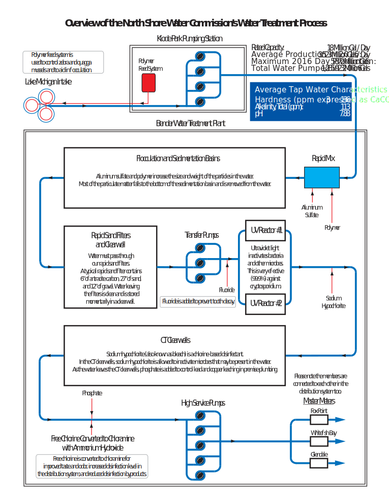

2016 Annual Water Quality Report
This report is available upon request to the public. For a paper copy, please contact your water utility or call (414) 963-0160. In addition to being published in this paper, the URL of the 2016 Annual Water Quality Report will be distributed by mail to water customers within the Village of Fox Point, City of Glendale, and Village of Whitefish Bay.
The North Shore Water Commission, in cooperation with its member utilities, publishes a water quality report annually. The report is designed so you can clearly understand what’s in your drinking water and how to obtain additional information. Thank you for being a valued customer!
North Shore Water Commission
The North Shore Water Commission (NSWC) operates and maintains the Water Filtration Plant at 400 West Bender Road in Glendale as well as the Raw Water Pumping Station located in Whitefish Bay. The NSWC is responsible for purifying and pumping potable water to its member utilities which include Fox Point, Glendale, and Whitefish Bay. Via a wholesale water agreement, water is also provided to some areas served by Mequon Water Utility. If you want to know more about water quality or this report, please contact the Plant Manager at (414) 963-0160 or at info@northshorewc.com.
Water Utility
Your water utility is responsible for connecting customers to the water system, metering, and responding to distribution problems such as main breaks. You can find out who your water utility is by checking your water bill. If you experience a water-related problem or have questions about your water bill, please contact your water utility for assistance.
Fox Point Water Utility: (414) 351-8900
Glendale Water Utility: (414) 228-1719
Whitefish Bay Water Utility: (414) 962-6690
Associations
The NSWC is a proud member of the following associations:
American Water Works Association
The Water Council
Water Research Foundation
West Shore Water Producers Association
Wisconsin Water Works Association
Governance
Fox Point, Glendale, and Whitefish Bay jointly own the facilities of the North Shore Water Commission and share the costs of water production and facility improvements.
The NSWC is governed by three appointed Commissioners and three Alternates with equal representation from Fox Point, Glendale, and Whitefish Bay. Each member is appointed by his/her respective municipality for a term of one year. Annually, the responsibilities of Chairman, Secretary and Member are rotated giving each community equal share of authority.
Under normal circumstances, the NSWC convenes monthly and reviews the operation and maintenance of the water treatment facility as well as water quality concerns. After discussion, the NSWC votes on proposed action, spending, and budgets. Capital improvements, such as the UV disinfection upgrade, must be unanimously approved and financed by the member communities.
Public Meetings
Regular meetings are usually held on the 2nd Wednesday of the month at 8:00 AM in the conference room located at 400 West Bender Road, Glendale. The public is welcome to attend any of our meetings. Please note that they may be held at different times or locations. You can view the agenda at http://northshorewater.org/index.php/meetings to find out more information about past or upcoming meetings. The agenda is typically posted 3 to 5 days prior to a meeting.
More Information About Us
For additional information about water quality on the internet, please visit WDNR’s website at http://dnr.wi.gov/topic/DrinkingWater, the EPA’s web site at http://www.epa.gov/safewater, or our web site at http://www.northshorewater.org. For more information about our member communities visit: http://www.villageoffoxpoint.com, http://www.glendale-wi.org/, and http://www.wfbvillage.org/.
Regulatory Compliance
We are proud to report that our system has not violated a maximum contaminant level or any other water quality standard. The following tables lists the contaminants that were detected. This report may contain up to five years worth of water quality results. If tested annually, or more frequently, the results from the most recent year are shown on this report. If testing is done less frequently, the results are shown from the most recent testing event. Please note that we did not test for cryptosporidium or radon during 2016 because we were not required to.
| Substance | Ideal Goal (MCLG) | Highest Level Allowed (MCL) | Level Found 1 | Compliance Status | Sources of Contamination / Notes |
|---|---|---|---|---|---|
| Coliform (TCR) | 0 | 5% of monthly samples 2 | 0% | Naturally present in the environment |
| Term | Definition |
|---|---|
| Not Applicable (NA)3 | Not applicable. |
| Not Detected (ND) | Laboratory analysis indicates that the constituent is not present. |
| Parts Per Million (ppm) or Milligrams Per Liter (mg/l) | One part per million corresponds to one minute in two years or a single penny in $10,000. |
| Parts Per Billion (ppb) or Micrograms Per Liter (ug/l) | One part per billion corresponds to one minute in 2,000 years, or a single penny in $10,000,000. |
| Parts Per Trillion (ppt) or Nanograms Per Liter (nanograms/l) | One part per trillion corresponds to one minute in 2,000,000 years, or a single penny in $10,000,000,000. |
| Parts Per Quadrillion (ppq) or Picograms Per Liter (picograms/l) | One part per quadrillion corresponds to one minute in 2,000,000,000 years or one penny in $10,000,000,000,000. |
| Picocuries Per Liter (pCi/L) | Picocuries per liter is a measure of the radioactivity in water. |
| Millirems Per Year (mrem/yr) | measure of radiation absorbed by the body. |
| Million Fibers Per Liter (MFL) | Million fibers per liter is a measure of the presence of asbestos fibers that are longer than 10 micrometers. |
| Nephelometric Turbidity Unit (NTU) | Nephelometric turbidity unit is a measure of the clarity of water. Turbidity in excess of 5 NTU is just noticeable to the average person. |
| Action Level (AL) | The concentration of a contaminant which, if exceeded, triggers treatment or other requirements which a water system must follow. |
| Treatment Technique (TT) | A treatment technique is a required process intended to reduce the level of a contaminant in drinking water. |
| Maximum Contaminant Level (MCL) | The “Maximum Allowed” (MCL) is the highest level of a contaminant that is allowed in drinking water. MCLs are set as close to the MCLGs as feasible using the best available treatment technology. |
| Maximum Contaminant Level Goal (MCLG) | The “Goal” (MCLG) is the level of a contaminant in drinking water below which there is no known or expected risk to health. MCLGs allow for a margin of safety. |
| Total Coliform Rule (TCR) | This is the regulation that pertains to disinfectant and bacteriological monitoring. |
Source Water Assessment
The North Shore Water Commission purifies water from Lake Michigan. The latest evaluation by the Wisconsin Department of Natural Resources (WDNR) indicates our source water quality is susceptible to pollution and contaminants. Preserving the water quality of Lake Michigan is essential to maintaining your drinking water quality. For more information on the impacts to your source of drinking water, see the Source Water Assessment for North Shore Water Commission at http://northshorewater.org/images/materials/SWA-2002.pdf.
Education Information
The sources of drinking water, both tap water and bottled water, include rivers, lakes, streams, ponds, reservoirs, springs and wells. As water travels over the surface of the land or through the ground, it dissolves naturally occurring minerals and, in some cases, radioactive material, and can pick up substances resulting from the presence of animals or from human activity. Contaminants that may be present in source water include the following.
Microbial contaminants, such as viruses and bacteria, which may come from sewage treatment plants, septic systems, agricultural livestock operations and wildlife.
Inorganic contaminants, such as salts and metals, which can be naturally-occurring or result from urban stormwater runoff, industrial or domestic wastewater discharges, oil and gas production, mining or farming.
Pesticides and herbicides, which may come from a variety of sources such as agriculture, urban stormwater runoff and residential uses.
Organic chemical contaminants, including synthetic and volatile organic chemicals, which are by-products of industrial processes and petroleum production, and can also come from gas stations, urban stormwater runoff and septic systems.
Radioactive contaminants, which can be naturally occurring or be the result of oil and gas production and mining activities.
In order to ensure that tap water is safe to drink, EPA prescribes regulations that limit the amount of certain contaminants in water provided by public water systems. Food and Drug Administration regulations establish limits for contaminants in bottled water, which should provide the same protection for public health.
Health Information
Drinking water, including bottled water, may reasonably be expected to contain at least small amounts of some contaminants. The presence of contaminants does not necessarily indicate that water poses a health risk. More information about contaminants and potential health effects can be obtained by calling the Environmental Protection Agency’s safe drinking water hotline at (800) 426-4791. Some people may be more vulnerable to contaminants in drinking water than the general population. Immuno-compromised persons such as persons with cancer undergoing chemotherapy, persons who have undergone organ transplants, people with HIV/AIDS or other immune systems disorders, some elderly, and infants can be particularly at risk from infections. These people should seek advice about drinking water from their health care providers. EPA/CDC guidelines on appropriate means to lessen the risk of infection by cryptosporidium and other microbial contaminants are available from the Environmental Protection Agency’s safe drinking water hotline (800) 426-4791.
Lead Information
If present, elevated levels of lead can cause serious health problems, especially for pregnant women and young children. Lead in drinking water is primarily from materials and components associated with service lines and home plumbing. North Shore Water Commission is responsible for providing high quality drinking water, but cannot control the variety of materials used in plumbing components. When your water has been sitting for several hours, you can minimize the potential for lead exposure by flushing your tap for 3 minutes before using water for drinking or cooking. If you are concerned about lead in your water, you may wish to have your water tested. Information on lead in drinking water, testing methods, and steps you can take to minimize exposure is available from the Safe Drinking Water Hotline or at www.epa.gov/safewater/lead.
Staff
Eric Kiefer has been the Plant Manager since 2007. He received a Bachelor of Science degree with a major in chemistry from the University of Wisconsin Oshkosh as well as a Master of Business Administration degree from Marquette University. All full-time staff that participate in operations, including Mr. Kiefer, have a WDNR Municipal Waterworks Operator Certification.
Turbidity Monitoring
In accordance with s. NR 810.29, Wisconsin Administrative Code, the treated surface water is monitored for turbidity to confirm that the filtered water is less than 0.30 NTU. Turbidity is a measure of the cloudiness of water. We monitor for it because it is a good indicator of the effectiveness of our filtration system. During the year, the highest single entry point turbidity measurement was 0.09 NTU. The lowest monthly percentage of samples meeting the turbidity limits was 100 percent.
Unregulated Contaminants Monitoring Rule (UCMR3)
EPA periodically requires water systems to test for unregulated contaminants to better understand their occurrence in drinking water. These compounds are not regulated, and therefore, have no additional reporting and/or treatment requirements. Glendale was selected by EPA to conduct this testing in 2013 and Whitefish Bay was selected to do the same from the summer of 2014 to 2015.
The following compounds were tested under UCMR3:
- 1,2,3-trichloropropane
- 1,1-dichloroethane
- 1,3-butadiene
- 1,4-dioxane
- bromochloromethane (Halon 1011)
- bromomethane
- chlorate
- chlorodifluoromethane (HCFC-22)
- chloromethane
- chromium
- chromium-6
- cobalt
- molybdenum
- perfluorobutanesulfonic acid (PFBS)
- perfluoroctanoic acid (PFOA)
- perfluoroheptanoic acid (PFHpA
- perfluorohexanesulfonic acid (PFHxS)
- perfluorononanoic acid (PFNA)
- perfluorooctanesulfonic acid (PFOS)
- strontium
- vanadium
Officials
| Office | Office Holder | Representing | Phone | |
|---|---|---|---|---|
| Chairman | John Edlebeck | Whitefish Bay | j.edlebeck@wfbvillage.org | (414) 962-6690 |
| Alternate | Paul Boening | Whitefish Bay | p.boening@wfbvillage.org | (414) 962-6690 |
| Secretary | Michael West | Fox Point | (414) 352-2712 | |
| Alternate | Scott Botcher | Fox Point | sbotcher@villageoffoxpoint.com | (414) 351-8900 |
| Member | Dave Eastman | Glendale | d.eastman@glendale-wi.org | (414) 228-1746 |
| Alternate | Rachel Reiss | Glendale | R.Reiss@glendale-wi.gov | (414) 228-1703 |
| Fiscal Agent | Linda DiFrances | Glendale | L.DiFrances@glendale-wi.gov | (414) 228-1701 |
| Plant Manager | Eric Kiefer | Commission | ekiefer@northshorewc.com | (414) 963-0160 |
Note
Officers from the member communities rotate positions annually at the May meeting.
Treatment Process

-
If monitored more than once per year, the highest value and range will be reported unless noted otherwise. ↩
-
No more than 5.0% samples total coliform-positive (TC-positive) in a month. (For water systems that collect fewer than 40 routine samples per month, no more than one sample can be total coliform-positive per month.) Every sample that has total coliform must be analyzed for either fecal coliforms or E. coli if two consecutive TC-positive samples, and one is also positive for E.coli fecal coliforms, system has an acute MCL violaton. ↩
-
another one ↩